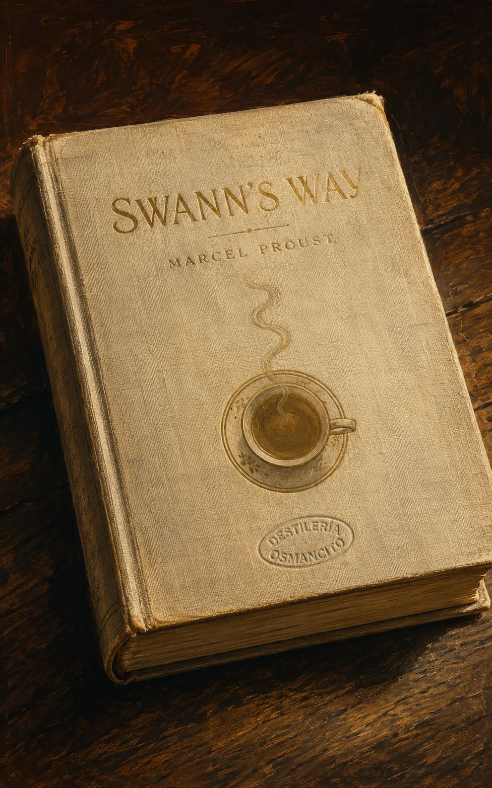
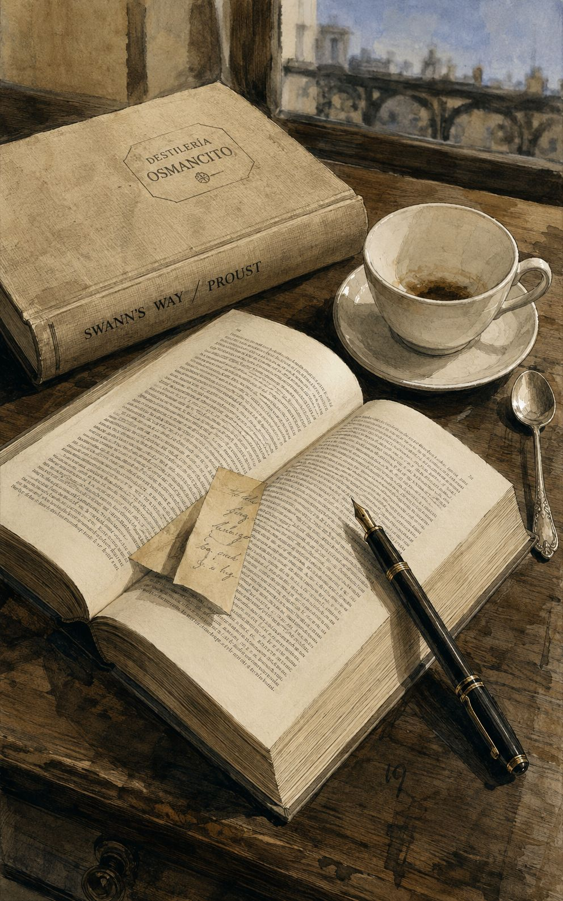
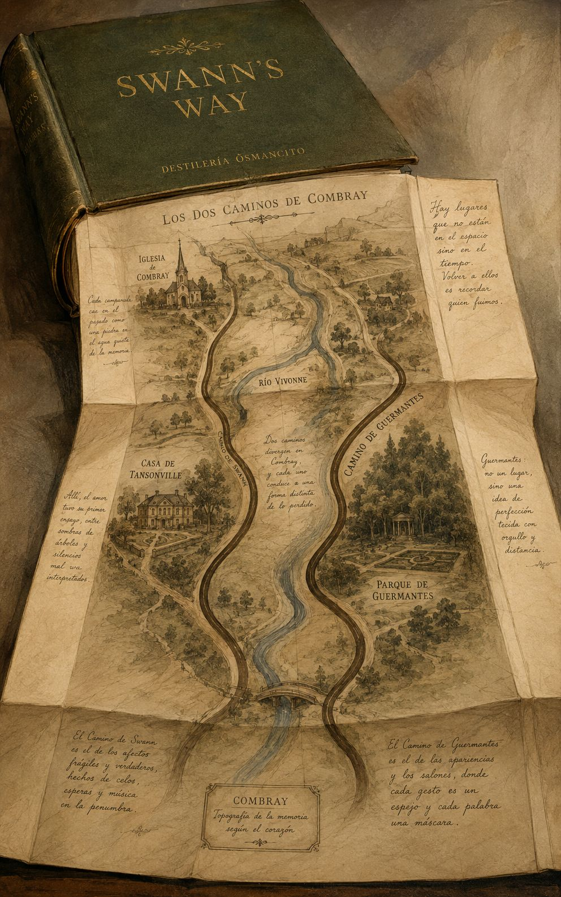
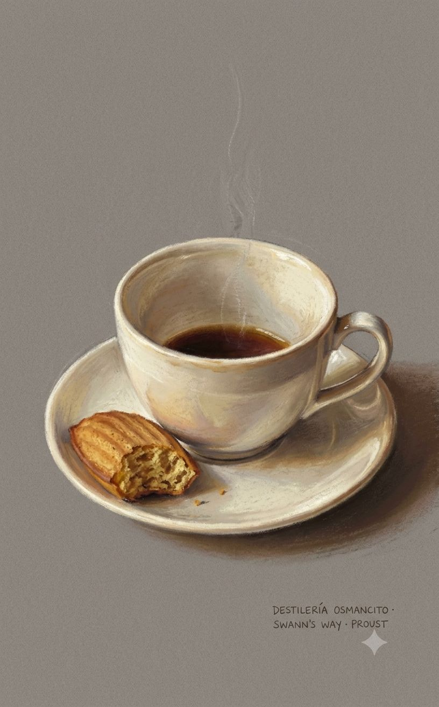
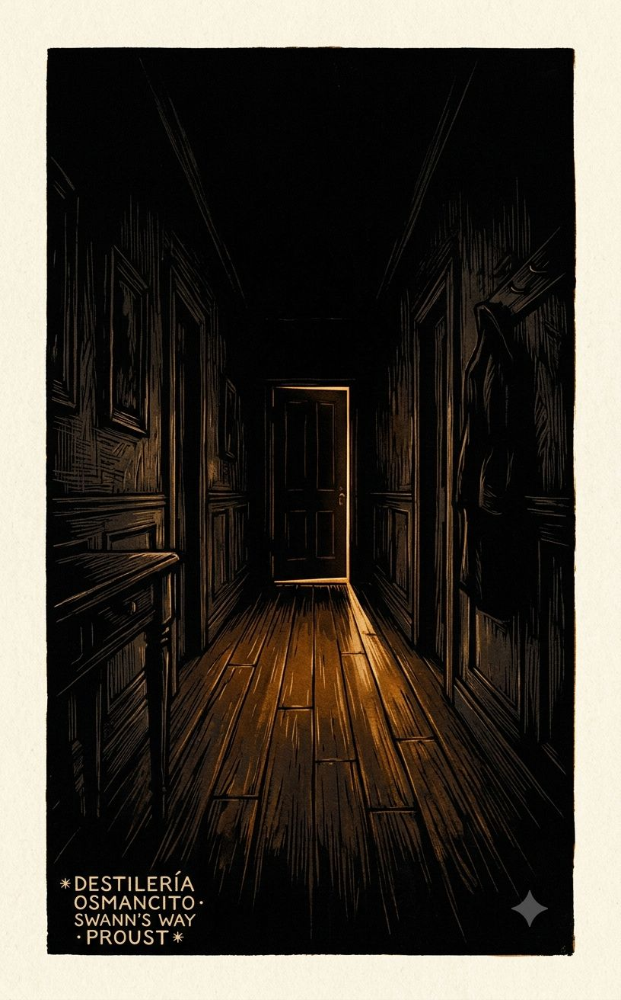
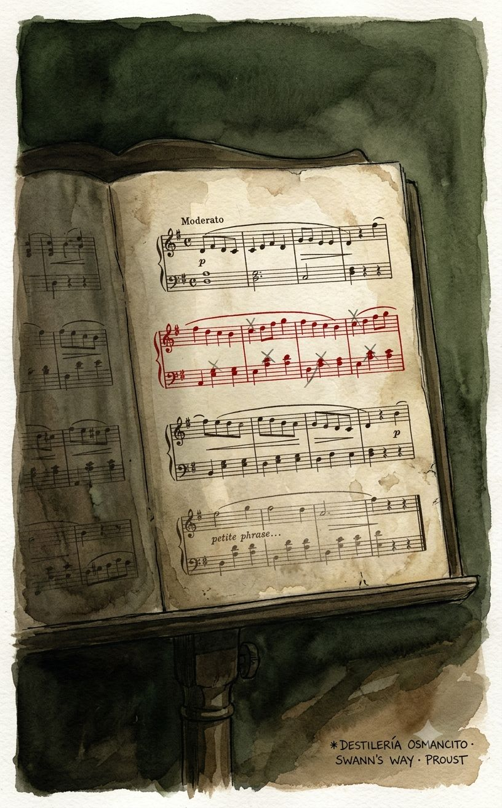
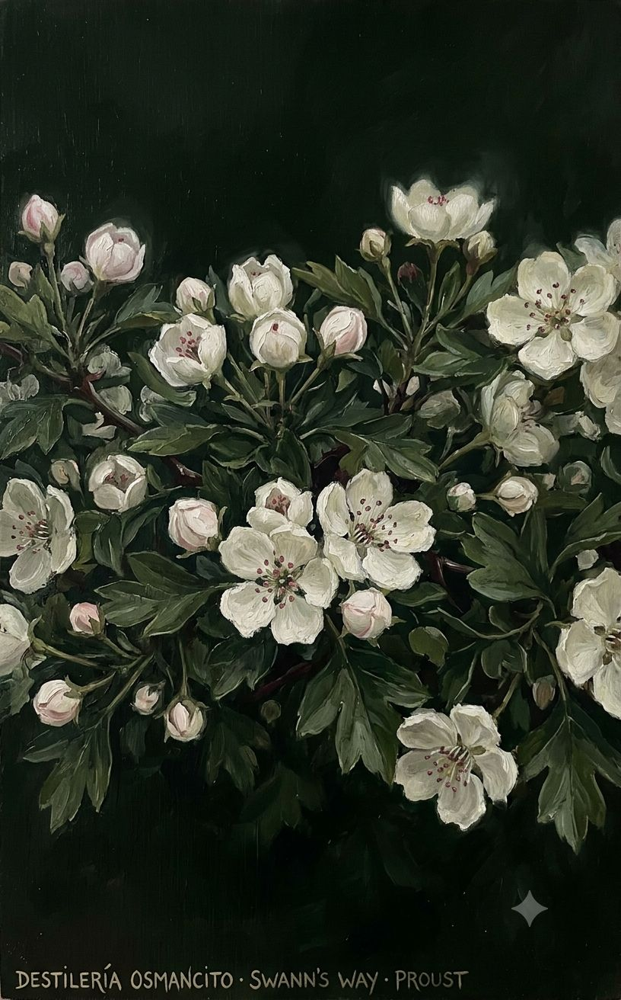

Lo primero que produce este corpus antes de ser pensado es peso. Un peso específico: el de la conciencia que no puede soltar nada. No es heaviness como carga —es heaviness como densidad, como una sustancia que se niega a evaporarse. El corpus huele a habitaciones cerradas en pleno verano, a té en infusión demasiado tiempo, a papel de libros leídos en la infancia que guardaron el calor de los dedos. Su temperatura es interior y constante, ni fría ni caliente: la temperatura exacta del recuerdo que acaba de activarse.
El ritmo es el más extraño de todo. No avanza: envuelve. Las frases rodean su objeto —una magdalena, un rostro, una nota musical— y no lo sueltan hasta haberlo agotado. Hay algo obsesivo sin ser ansioso, algo que se parece más a la meditación que a la persecución. El corpus ofrece una resistencia suave: no empuja, espera. Es un objeto poroso. Todo lo que uno le lleva —un olor, una estación, una luz de tarde— penetra y queda.
La tensión irresuelta es la que existe entre el momento vivido y el momento recordado, y la certeza de que nunca coinciden. El corpus no lo llora: lo estudia. Eso es lo que lo hace tan peculiar —su frialdad analítica ante lo más ardiente. El tiempo no se lamenta aquí: se disecciona con una lupa de cristal muy fino, sostenida por una mano que tiembla ligeramente.
Paleta que emerge de esta atmósfera y que será coherente en todos los prompts: ámbar oscuro, marfil viejo, azul de acuarela muy aguado, verde musgoso apagado, sombra sepia. Ningún blanco puro. Ningún negro absoluto.







La palabra más frecuente con contenido en este corpus no es amor ni tiempo aunque el corpus habla de ambos sin descanso: es momento. Eso lo dice todo. Proust no escribe sobre el pasado —escribe sobre el instante en que el pasado regresa sin ser llamado, y la conciencia que intenta detenerlo para examinarlo antes de que se vaya. El descubrimiento que no se esperaba es que la novela más famosa sobre la memoria es, página a página, una novela sobre la imposibilidad de recordar con exactitud — y que esa imposibilidad es lo que la impulsa y lo que la hace hermosa.
Un volumen que pesa más de lo que anuncia: como si entre sus páginas hubiera algo que no es papel.
Hay corpus que argumentan. Este espira. No presenta su materia —la segrega lentamente, como una sustancia que no sabe ser otra cosa que lo que es. Nombrarlo novela es correcto y es insuficiente: es también un sistema nervioso desplegado sobre el papel, un método de percepción disfrazado de ficción, una meditación que se ha puesto a sí misma personajes para no tener que confesar que es filosofía. Lo que el corpus dice puede resumirse. Lo que el corpus es no.
Título — Swann’s Way (Du côté de chez Swann)
Autor — Marcel Proust
Año — 1913
Género — Novela (primer volumen de À la recherche du temps perdu, obra en siete volúmenes)
Extensión estimada — 188,019 palabras · 752 páginas aprox. · 3 partes («Combray», «Swann in Love», «Place-Names: The Name»)
Idioma original — Francés
Palabra más frecuente con contenido — moment (227 ocurrencias). El corpus declara ser sobre el tiempo y la memoria —y lo es. Pero la unidad que lo obsesiona no es el tiempo como extensión sino el instante como punto de ruptura: el momento en que algo se quiebra, en que algo regresa, en que algo se pierde por segunda vez. La palabra confirma y precisa.
Un narrador adulto e insomne recorre en la memoria tres territorios: la infancia en Combray con su geografía de rituales domésticos y sus dos caminos hacia el mundo; el amor de Charles Swann por Odette de Crécy, rastreado en su ascenso, su cima de celos y su degradación final hasta la desolación; y los primeros destellos del deseo en el París de la adolescencia, centrados en Gilberte Swann. Los tres territorios están unidos por una sola pregunta que el narrador no formula directamente pero que lo mueve todo: ¿puede recuperarse lo vivido, o toda recuperación es ya otra pérdida?
El Narrador — voz sin nombre, niño y adulto simultáneamente; observador cuya sensibilidad es el instrumento y el sujeto del libro.
Charles Swann — dandy culto, frecuentador de la alta sociedad, que se destruye amando a una mujer que no es su tipo; figura cuyo arco anticipa y espeja el del narrador.
Odette de Crécy — mujer de origen oscuro, ambigua y huidiza, objeto del amor de Swann; su elusividad es estructural, no accidental.
La abuela — encarna los valores del corpus: autenticidad, profundidad, desprecio por lo superficial.
Françoise — sirvienta de la familia del narrador; su código moral arcaico e implacable opera como contrapunto cómico y filosófico a lo largo del texto.
Tía Léonie — inválida voluntaria en Combray, cuya habitación es el centro inerte del mundo de la infancia; su régimen de rumores y tisanas organiza el tiempo del narrador niño.
M. Vinteuil — compositor de provincia cuya pequeña frase musical se convierte en el «himno nacional» del amor de Swann; aparece apenas como personaje pero su obra estructura el volumen.
Mme Verdurin — anfitriona del «pequeño clan», tiránica y gregaria; arbitra quién pertenece al mundo y quién queda fuera.
Gilberte — hija de Swann, primer objeto del deseo adolescente del narrador; su nombre es el primer nombre propio que el narrador recibe como una revelación.
Despertares. Dormitorios del pasado, en Combray, en Tansonville, en Balbec. La costumbre.
La hora de dormir en Combray. La linterna mágica; Geneviève de Brabant. Tardes en familia. El pequeño armario con olor a raíz de lirio. El beso de buenas noches.
Visitas de Swann; su padre; su insospechada vida social. «Nuestra personalidad social es una creación de los pensamientos ajenos». La casa de la señora de Villeparisis en París; «el sastre y su hija». Las tías Céline y Flora. El código de Françoise. Swann y yo. Mi educación: los «principios» de mi abuela y mi madre; el comportamiento arbitrario de mi padre. Los regalos de mi abuela; sus ideas sobre los libros. Una lectura de George Sand.
Resurrección de Combray a través de la memoria involuntaria. La madeleine mojada en una taza de té.
Combray. Las dos habitaciones de la tía Léonie; su té de lima. Françoise. La iglesia. El señor Legrandin. Eulalie. Almuerzos dominicales. El santuario del tío Adolphe. Amor por el teatro: los títulos en los carteles. El encuentro con «la dama de rosa». Mi disputa familiar con el tío Adolphe. La criada: «La caridad» de Giotto. Leyendo en el jardín. La hija del jardinero y la caballería que pasaba. Bloch y Bergotte. Bloch y mi familia. Leyendo a Bergotte. La amistad de Swann con Bergotte. Berma. Los gestos y la actitud de Swann. El prestigio de la señorita Swann como amiga de Bergotte. Las visitas del cura a la tía Léonie. Eulalie y Françoise. El confinamiento de la criada. La pesadilla de la tía Léonie. Almuerzos de los sábados. Los espinos en el altar de la iglesia de Combray. M. Vinteuil. Su hija de aspecto juvenil. Paseos por Combray a la luz de la luna. La tía Léonie y Luis XIV.
El extraño comportamiento de M. Legrandin. Planes para unas vacaciones en Balbec. El camino de Swann (o de la Méséglise) y el camino de Guermantes.
El camino de Swann. Vista de la llanura. Las lilas de Tansonville. El sendero de los espinos. Aparición de Gilberte. La dama de blanco y el hombre de blanco se agachan (Madame Swann y M. de Charlus). El amanecer del amor por Gilberte: el encanto del nombre «Swann». Despedida de los espinos. La amiga de Mlle Vinteuil llega a Montjouvain. La tristeza de M. Vinteuil. La lluvia. El pórtico de Saint-André-des-Champs, Françoise y Théodore. Muerte de la tía Léonie; El profundo dolor de Françoise. Exultación en la soledad del otoño. Desarmonía entre nuestros sentimientos y su expresión habitual. «Las mismas emociones no surgen simultáneamente en todos». Despertares de deseo. El pequeño armario con olor a raíz de lirio. Escena de sadismo en Montjouvain.
El Camino de Guermantes. Paisaje fluvial: el Vivonne; los nenúfares.
Los Guermantes; Geneviève de Brabant, «la antepasada de la familia Guermantes». Ensoñaciones y desánimo de una futura escritora. La duquesa de Guermantes en la capilla de Gilbert el Malo. Los secretos ocultos tras formas, aromas y colores. Los campanarios de Martinville; primera experiencia gozosa de creación literaria. Transición de la alegría a la tristeza. ¿La realidad toma forma únicamente en la memoria?
Despertares.
Los Verdurin y su “pequeño clan”. Los “fieles”. Odette menciona a Swann a los Verdurin. Swann y las mujeres. El primer encuentro de Swann con Odette: ella “no es su tipo”. Cómo se enamora de ella. El Dr. Cottard. La sonata en fa sostenido. El sofá de Beauvais. La frase ingeniosa. El Vinteuil de la sonata y el Vinteuil de Combray. Madame Verdurin encuentra a Swann encantador al principio. Pero sus “poderosas amistades” le causan una mala impresión. La costurera. Swann acepta encontrarse con Odette solo después de cenar. La frase ingeniosa de Vinteuil: “el himno nacional de su amor”. El té con Odette; sus crisantemos. Rostros de hoy y retratos del pasado: Odette y la Séfora de Botticelli. Odette, un cuadro florentino. Carta de amor de Odette escrita desde la Maison Dorée. La llegada de Swann a casa de los Verdurin una noche después de la partida de Odette; una angustiosa búsqueda nocturna. Las cattleyas; ella se convierte en su amante. La vulgaridad de Odette; su idea de “elegancia”. Swann empieza a adoptar sus gustos y considera a los Verdurin “gente magnánima”. Sin embargo, no es un verdadero miembro de los “fieles”, a diferencia de Forcheville. Una cena en casa de los Verdurin: Brichot, Cottard, el pintor, Saniette. La pequeña frase. Los celos de Swann: una noche, despedido por Odette a medianoche, regresa a su casa y llama a la ventana equivocada. El cobarde ataque de Forcheville contra Saniette, y la sonrisa de complicidad de Odette. La puerta de Odette permanece cerrada para Swann una tarde; su mentira. Signos de angustia que acompañan la mentira de Odette. Swann descifra una carta de ella a Forcheville a través de el sobre. Los Verdurin organizan una excursión a Chatou sin Swann. Su indignación con ellos. La exclusión de Swann. ¿Debería ir a Dreux o Pierrefonds a buscar a Odette? Esperando durante la noche. Noches tranquilas en casa de Odette con Forcheville. El resurgimiento de la angustia. El proyecto de Bayreuth. Amor, muerte y el misterio de la personalidad. Charles Swann y el “joven Swann”. Swann, Odette, Charlus y el tío Adolphe. Anhelo de muerte.
Una velada en casa de la marquesa de Saint-Euverte. Apartado de la vida social por su amor y sus celos, Swann puede observarla tal como es: los lacayos; los monóculos; la marquesa de Cambremer y la vizcondesa de Franquetot escuchando «San Francisco» de Liszt; Madame de Gallardon, prima despreciada de los Guermantes. Llegada de la princesa de Laumes; su conversación con Swann. Swann presenta a la joven Madame de Cambremer (la señorita Legrandin) al general de Froberville. Una breve frase de Vinteuil le recuerda conmovedoramente a Swann los días en que Odette lo amaba. El lenguaje de la música. Swann comprende que el amor de Odette por él jamás revivirá.
Todo el pasado hecho añicos. Mahoma II de Bellini. Una carta anónima. Las hijas de mármol. Beuzeville-Bréauté. Odette y las mujeres. La imposibilidad de poseer jamás a otra persona. En la Île du Bois, a la luz de la luna. Un nuevo círculo del infierno. El terrible poder recreativo de la memoria. Odette y las alcahuetas. ¿Había almorzado con Forcheville en la Maison Dorée el día del festival de París-Murcie? Estaba con Forcheville, y no en la Maison Dorée, la noche en que Swann la buscó en casa de Prévost. Las sospechosas efusiones de Odette. Una «conversación encantadora» en un burdel. Odette se va de crucero con los «fieles». Madame Cottard le asegura a Swann que Odette lo adora. El amor de Swann se desvanece; ya no sufre al saber que Forcheville ha sido amante de Odette. El regreso de sus celos se convierte en una pesadilla. Partida hacia Combray, donde verá el rostro joven de la señora de Cambremer, cuyo encanto le había cautivado en casa de la señora de Saint-Euverte. La primera imagen de Odette que vuelve a aparecer en su sueño: había deseado morir por una mujer que no era su tipo.
Sueños de nombres de lugares. Habitaciones en Combray. Habitación en el Grand Hotel de Balbec. El Balbec real y el Balbec de ensueño. El tren de las 1:22. Sueños de primavera en Florencia. Palabras y nombres. Nombres de pueblos normandos. Plan fallido de visitar Florencia y Venecia. El médico me prohíbe viajar o ir al teatro a ver Berma; me aconseja pasear por los Campos Elíseos bajo la vigilancia de Françoise.
En los Campos Elíseos. Una niña pelirroja; se llama Gilberte.
Juegos de prisioneras. ¿Qué tiempo hará? Nieve en los Campos Elíseos. La lectora de Débats (Mme Blatin). Símbolos de amistad: el mármol de ágata, el folleto de Bergotte, «Puedes llamarme Gilberte»; por qué no me brindan la felicidad esperada. Un día de primavera en invierno: alegría y decepción. El Swann de Combray se ha convertido en otra persona: el padre de Gilberte. Gilberte me dice con cruel deleite que no volverá a los Campos Elíseos antes de Año Nuevo. «En mi amistad con Gilberte, solo yo amé». El apellido Swann. Swann se encuentra con mi madre en los Trois Quartiers. Peregrinación con Françoise a la casa de los Swann cerca del Bois.
El Bois, Jardín de la Mujer. La señora Swann en el Bois. Un paseo por el Bois una mañana de finales de otoño de 1913. Memoria y realidad.
Combray. El narrador adulto, tendido en la oscuridad, convoca la memoria de su infancia en Combray. Las noches de entonces eran dominadas por la espera del beso de buenas noches de su madre —un rito que podía ser negado, y cuya negación inauguraba una forma de angustia que el libro nunca cierra del todo. El mundo giraba en torno a la casa de la tía Léonie, a los dos caminos para salir del pueblo —el Camino de Swann hacia Tansonville y la llanura, el Camino de Guermantes hacia el río y la aristocracia— y a una serie de figuras que el narrador observa con la precisión que pronto dedicará a todo: Françoise, Legrandin el esnob que finge no serlo, el vecino Vinteuil y su hija, los propios Swann que encarnan el mundo que existe más allá de Combray. La madeleine mojada en el té —convocada tardíamente en el volumen, pero gravitando sobre todo— produce la recuperación involuntaria de este mundo: no el recuerdo voluntario y pálido, sino la resurrección plena, con olor y temperatura. Es el primer momento en que el corpus anuncia su tema real.
Swann enamorado. La sección central narra en tercera persona, como si fuera otra novela insertada, el amor de Charles Swann por Odette de Crécy. Swann la conoce en el salón de los Verdurin —un clan burgués que practica la exclusión bajo la apariencia del calor— y al principio Odette no le interesa: no es su tipo. Pero la costumbre y una comparación fortuita con una figura de Botticelli transforman la indiferencia en obsesión. La pequeña frase del cuarteto de Vinteuil se convierte en el marcador sonoro de su amor. La relación se convierte en los celos: Swann vigila, interroga, interpreta cada gesto de Odette, descifra cartas a través del sobre, espía ventanas. Los celos no son accidentales —son el mecanismo por el que Swann accede a Odette como objeto de conocimiento, ya que nunca puede acceder a ella como persona. El amor termina no con una ruptura sino con un vaciamiento: Swann se despierta una mañana sin dolor, recuerda el rostro delgado y fatigado de Odette que amó, y pronuncia la frase que cierra la sección: se dice que desperdició años de su vida, que deseó morir, que amó con su mayor amor a una mujer que no era su tipo. El conocimiento llega demasiado tarde para servir de algo.
Nombres de lugares: el nombre. El narrador adolescente en París, sometido a la prohibición médica de viajar, proyecta el mundo sobre los nombres propios: Balbec, Florencia, Venecia existen para él como sustancias puramente nominales, cargadas de promesas que la realidad solo podrá defraudar. En los Campos Elíseos conoce a Gilberte Swann —hija del Swann del volumen anterior, ahora casado con Odette— y se enamora de ella con la misma mecánica que su padre aplicó a su madre: la costumbre, la espera, el dolor de la ausencia, la interpretación obsesiva de señales. El volumen cierra con una caminata por el Bois de Boulogne en otoño tardío, donde el narrador adulto busca el mundo de Mme Swann que recordaba de su infancia y no lo encuentra: el lugar existe pero la capa de memoria que lo hacía real ha desaparecido. El corpus termina en esa comprobación: los lugares no son el espacio sino el tiempo que les dimos, y ese tiempo no se repite.
Este corpus produce, antes de ser pensado, la sensación de estar dentro de una conciencia que se observa a sí misma observar. No hay distancia entre el instrumento y el objeto: la misma mente que percibe el mundo es el mundo que se percibe. Lo que pesa es eso —no la historia, que es mínima, sino la densidad de atención con que cada detalle es sostenido hasta que entrega todo lo que tiene. Produce algo parecido a la quietud: no el reposo, sino la inmovilidad de quien está completamente presente en lo que hace. Y produce, en la segunda lectura de cualquier página, la certeza de que la primera lectura ya había perdido algo.
Posesión e inaprehensibilidad. El corpus trabaja sin descanso la imposibilidad de poseer aquello que se ama —persona, lugar, momento, sensación. Swann no puede poseer a Odette; el narrador no puede poseer a Gilberte; la memoria voluntaria no puede poseer el pasado. Pero la memoria involuntaria tampoco posee: revela y escapa. Lo que el corpus estudia no es la pérdida sino la estructura de lo inaprehensible.
La persona real y la persona imaginada. Cada figura del corpus existe dos veces: como objeto de la percepción directa y como construcción de quien la desea o teme. Las dos versiones nunca coinciden. Swann ama a una Odette que Odette no es; el narrador ama a una Gilberte que Gilberte no conoce; Combray real y Combray recordada son lugares distintos que comparten un nombre. El corpus no lamenta esta escisión —la considera la condición normal de la conciencia.
El tiempo como destrucción y como salvación. El tiempo destruye todo lo que el corpus ama: las tardes de Combray, el amor de Swann, la Mme Swann del Bois. Pero el tiempo —en su forma involuntaria, en el instante del reconocimiento— es también el único mecanismo por el que algo puede recuperarse. No se resuelve esta tensión. Se habita.
El hallazgo que no se esperaba: este capítulo no trata del pasado —trata de la arquitectura de la conciencia en el momento preciso en que se despierta y todavía no sabe quién es. Todo lo demás —la madeleine, la madre, los dos caminos, los campanarios— son consecuencias de esa fracción de segundo de anonimato puro. La tensión que lo atraviesa es una paradoja cruel: el yo solo puede recuperarse a sí mismo a través de objetos que no son él, y esos objetos —una habitación, un olor, un beso— resultan ser más fieles que la propia memoria. Lo que el lector recordará es que hay un hombre que necesita que sea su madre, exactamente su madre, y no una mejor.
El momento antes de ser alguien
El texto abre en un estado que no es insomnio ni sueño: el narrador existe pero no sabe dónde, ni cuándo, ni quién. La apertura es filosófica antes de ser narrativa —¿qué queda del yo cuando se suspende la cadena de reconocimiento? El movimiento viaja a través de varios cuartos que el cuerpo reconstruye en la oscuridad antes de que lo haga la mente, y llega a una imagen asombrosa: la memoria corporal como cuerda lanzada desde el cielo para rescatar al náufrago del no-ser. El capítulo no resuelve esta pregunta —la transforma en método. Vértigo ontológico.
La linterna y la habitación que deja de ser mía
Desde la inestabilidad del yo despierto, el texto retrocede a la infancia en Combray y abre una tensión más concreta: el niño posee su habitación, y la linterna mágica se la arrebata. Lo que debía consolar lo pervierte. Golo avanza sobre el picaporte, sobre la pared, sobre todo —la proyección devora el espacio doméstico y lo convierte en algo ajeno. El movimiento no escala hacia el terror sino hacia algo más inquietante: la habitación familiar se vuelve hotel, y la única salida es bajar corriendo al comedor, a los brazos de la madre. El cierre es de alivio, pero el alivio mismo delata la dependencia. Usurpación íntima.
El beso que nunca dura suficiente
La tensión más larga del capítulo se abre aquí y no cerrará nunca del todo. El niño espera el beso de buenas noches de la madre con una angustia que ya prefigura —y él mismo lo señala— la estructura del amor adulto: el deseo de que algo que se sabe breve llegue lo más tarde posible para prolongar la anticipación; la necesidad de que sea ella y no nadie parecido a ella; el conocimiento de que pedir más destruirá lo que ya se tiene. El movimiento escala cuando hay visita en casa y la madre no sube en absoluto, alcanza su clímax en la noche en que Swann está de visita y el niño le manda una nota en secreto, y gira cuando la madre —en contra de lo que manda el padre— sube y se queda. Pero la resolución es envenenada: ella se queda porque ha reconocido que ya no tiene sentido seguir educando su fuerza de voluntad. Esa rendición materna, leída como victoria por el niño, es en realidad la primera derrota del capítulo. Capitulación disfrazada de amor.
Swann como espejo cóncavo
Introducido casi de paso, Swann organiza un movimiento lateral que el texto usa para refractar todo lo demás. Su presencia en Combray es incógnita: nadie sabe que es uno de los hombres más buscados del Faubourg Saint-Germain. El movimiento va desde la opacidad —Swann como vecino simpático— hacia una revelación que no cambia nada para los personajes pero lo cambia todo para el lector. El padre de Swann aparece como contrapunto: el hombre que al lado del cadáver de su esposa señala los espinos en flor y exclama que es bueno estar vivo, y que luego, perplejo ante su propio impulso de alegría, se pasa la mano por la frente y limpia los anteojos. Ese gesto —único, preciso, sin moral— es la firma del movimiento. Asombro ante uno mismo.
La tía Léonie y la geopolítica de la cama
La tía que ya no baja de su habitación, luego ya no sale de su cama, luego ya no hace más que mirar por la ventana y monologar en voz baja, genera un movimiento que parece menor y resulta ser estructural. No es un retrato de la hipocondría: es una cartografía del repliegue voluntario hacia la soberanía de la percepción propia. La tía convierte cada sensación en acontecimiento, cada acontecimiento en crónica, y la crónica en el único orden del mundo que puede controlar. Françoise es su ejército. El movimiento viaja desde la inmovilidad aparente hacia la revelación de que esa inmovilidad es una forma activa de poder —y que el pueblo entero de Combray fluye hacia ella y no al revés. No cierra: queda suspendido como la propia vida de la tía. Soberanía del inválido.
Françoise: la santa y el cuchillo
El movimiento más violento del capítulo. Françoise aparece como figura de devoción casi religiosa —frailera, competente, leal— y el texto la construye con paciencia durante páginas hasta que el narrador la descubre en la cocina degollando un pollo con furia, llamándolo “criatura inmunda” entre maldiciones. El giro es absoluto. Pero el capítulo no lo deja ahí: avanza hacia una generalización que es casi filosófica —Françoise llora leyendo en el periódico los sufrimientos de desconocidos, y no puede llorar al lado de quien sufre de verdad. La distancia produce la emoción; la proximidad la anula. El movimiento termina en la imagen de Françoise leyendo el libro de medicina, sollozando por la paciente prototípica, e incapaz de sentir nada por la muchacha real que gime en el cuarto de al lado. Compasión sin objeto.
La madeleine
El movimiento más famoso de la literatura moderna. Se abre con un objeto mínimo —una galleta en una taza de té— y una sensación de placer cuya fuente el narrador no puede identificar. Viaja hacia adentro: primero el placer, luego la voluntad de encontrar su origen, luego diez intentos fallidos, luego el reconocimiento. Y en el reconocimiento, no solo un recuerdo sino un mundo entero —Combray completo, con sus calles, su iglesia, sus jardines— que emerge de una sola taza de té como en el juego japonés del papel en el agua. El cierre es de apertura total: lo que parecía un recuerdo es el portal hacia las dos mil páginas que siguen. Resurrección por accidente.
Los dos caminos
El último movimiento grande del capítulo. Méséglise y Guermantes no son solo dos rutas de paseo: son dos estructuras de deseo que el texto declara incompatibles para siempre. El movimiento viaja desde la geografía concreta —dos caminos que no se tocan en el mapa— hacia la abstracción de que así también funcionan los estados del alma: contiguos, impermeables el uno al otro, incapaces de comunicarse. Termina en una imagen que condensa todo: en el camino de Guermantes, la mancha de melancolía que cae sobre el niño cuando ve la granja que anuncia que pronto estará en casa y que la madre no subirá a darle las buenas noches. Segundos antes era feliz. Ahora querría estar muerto. Y al día siguiente no recordará haber querido eso. Impermeabilidad de los estados.
Los campanarios de Martinville
Movimiento final, y el más extraño. El niño viaja en el coche del médico y ve tres campanarios que parecen moverse, acercarse, organizarse, despedirse. Siente que hay algo oculto detrás de la movilidad de esas formas, algo que no puede nombrar pero que le produce un placer agudo. Escribe un pequeño texto describiendo lo que ve, y al terminarlo siente el alivio específico del que ha puesto en palabras algo que hasta entonces solo existía como presión. Canta. El movimiento abre la pregunta sobre la naturaleza de la percepción estética y la cierra —provisionalmente— con un gesto bufón y perfecto: el niño satisfecho como una gallina que acaba de poner un huevo. Parto de la forma.
Veredicto del capítulo: capítulo que funda —establece las coordenadas del tiempo, del yo, del deseo y de la memoria sobre las que se construirá todo el corpus; no hay un eje sino una red de ejes que este capítulo tiende sin cerrar ninguno.
“Combray I” no es un primer capítulo en el sentido convencional —no establece un punto de partida para una historia que avanzará linealmente. Es, en cambio, la excavación del suelo sobre el que ese avance será posible. Lo que ocurre aquí que importa para el corpus entero es esto: se descubre el mecanismo.
El mecanismo es doble. Primero: la memoria involuntaria, la que activa una sensación física antes de que la razón tenga tiempo de intervenir. El narrador no decide recordar Combray —lo recuerda su lengua, sin permiso. Segundo: la imposibilidad de regresar a lo que fue, combinada con la certeza de que ese pasado es más real que el presente. Las flores que le muestran hoy no parecen flores verdaderas. Solo las del camino de Méséglise, fijadas en él con la intensidad de la infancia, merecen ese nombre.
Lo que esto funda para el corpus es una epistemología. No se puede confiar en la memoria voluntaria; no se puede confiar tampoco en la percepción directa del presente. Solo existe el instante involuntario —la madeleine, el adoquín, el olor a barniz— en que el pasado se inserta sin ser convocado y revela, por contraste, que el tiempo no ha pasado sino que se ha estratificado. El narrador vive en todas sus épocas simultáneamente, separadas por “fallas geológicas” apenas visibles pero reales.
Todo lo demás que sucede en el capítulo prepara o ilustra ese hallazgo. La angustia por el beso de la madre es ya la estructura del amor adulto —el deseo de la presencia exacta, irreemplazable, de esa persona y no de ninguna mejor. Françoise anticipa la contradicción moral que atravesará a casi todos los personajes: la capacidad de ternura que coexiste sin tensión aparente con la crueldad más específica. Swann es ya la promesa de que el mismo hombre puede ser, según quién lo mire, un vecino simpático o el más buscado del Faubourg. Legrandin es la primera demostración de que el deseo de ascenso social produce una forma de esquizofrenia corporal: los ojos dicen una cosa mientras la espalda dice otra.
Y los dos caminos —Méséglise y Guermantes— nombran la estructura profunda de todo lo que vendrá: dos modos de desear que parecen incompatibles y que solo al final de la obra entera se revelarán como partes del mismo territorio.
El naufragio antes del nombre
Cuando el sueño es suficientemente profundo, el hombre que despierta en la oscuridad no sabe quién es. No es una metáfora: no sabe. Tiene “el sentido más rudimentario de la existencia, tal como puede latir y parpadear en el fondo de la conciencia de un animal.” Es más pobre que el hombre de las cavernas. Y entonces la memoria llega —no la de dónde está, sino la de dónde ha estado, una serie de habitaciones posibles que el cuerpo recorre antes de que la mente se organice— y lo saca del abismo “como una cuerda lanzada desde el cielo.” Cada mañana, la identidad es una recuperación. Nadie lo sabe porque ocurre demasiado rápido.
Lo que Golo se llevó
La linterna mágica proyectaba a Golo sobre las paredes del cuarto del niño, y Golo absorbía todo lo que encontraba a su paso —el picaporte, la cortina, la puerta— sin que ningún obstáculo lo detuviera ni alterara la nobleza melancólica de su rostro. La habitación que el niño había llenado de su propia personalidad hasta no pensar más en ella que en sí mismo quedaba súbitamente irreconocible, como un cuarto de hotel al que se llega por primera vez en tren. El efecto anestésico del hábito, destruido. Bastó una luz distinta.
La lógica del rehén
El niño esperaba el beso de buenas noches con una angustia de estructura precisa: deseaba que llegara lo más tarde posible para prolongar el tiempo durante el cual su madre todavía no había aparecido, porque una vez que aparecía ya estaba a punto de irse. Si pedía un beso más, ella se disgustaría. Si no lo pedía, ella se iba. Él sabía —con esa claridad extraña que tienen los niños para el mecanismo de sus propias torturas— que el momento en que ella entraba a su habitación contenía ya, plegado dentro de sí, el momento en que saldría. Lo que amaba era el umbral. Lo que sufría era que el umbral siempre se cruzaba.
Lo que ninguna amante pudo dar
Solo años después, cuando ya había tenido amantes, el narrador entiende lo que recibía entonces de su madre: su corazón entero, sin reserva, sin residuo de ninguna intención que no fuera para él solo. Con las amantes, incluso en el momento de creer en ellas, siempre había duda. Con la madre, en cambio, ninguna. Lo recibía “en un beso”: presencia real, sin grieta. Esa es la norma con la que medirá todo amor posterior, y ninguno pasará.
El hombre de la frente
Junto al cadáver de su esposa, el padre de Swann salió un momento al parque y de pronto señaló los espinos en flor, el estanque nuevo, la brisa, y exclamó que era bueno estar vivo. Luego la memoria de la muerta volvió de golpe. No intentó explicar cómo había podido, ni por qué, ni si debía sentirse culpable. Simplemente se pasó la mano por la frente, se frotó los ojos, limpió los anteojos. Ese gesto —habitual en él ante cualquier pregunta que lo perpleja— fue lo único que supo hacer ante la inconsistencia de ser un hombre que llora y que, al mismo tiempo, siente que es bueno estar vivo bajo los espinos.
La distancia exacta del dolor ajeno
Françoise encontró en el libro de medicina el caso clínico de los dolores de posparto y empezó a llorar. “¡Oh, Virgen santa, es posible que Dios quiera que una criatura humana sufra tanto!” Sollozaba sobre la paciente prototípica, sobre la mujer sin nombre de la descripción clínica, con una compasión que le oprimía el pecho. En el cuarto de al lado, la muchacha de carne y hueso gemía. Françoise, cuando fue a buscarla, no pudo encontrar en ese sufrimiento real el menor estímulo para la ternura. Murmuró algo áspero y volvió a la cocina. El dolor necesita distancia para volverse emoción. La proximidad lo apaga.
Lo que sobrevive cuando todo lo demás muere
Los sabores y los olores son los últimos en rendirse. Cuando los edificios se derrumban y las personas mueren y las cosas se rompen y se dispersan, el gusto y el olfato permanecen —“más frágiles pero más duraderos, más inmateriales, más persistentes, más fieles”— flotando solos como almas, recordando, esperando, esperando, en la gota casi imperceptible de su esencia, “la vasta estructura del recuerdo.” Una galleta mojada en té devuelve un mundo entero. Nada de lo que fue visible lo logra.
El pájaro que cruza la línea
El niño volvía del paseo por el camino de Guermantes y de pronto veía la granja que anunciaba que en media hora estaría en casa, y que la madre no subiría a darle las buenas noches. La zona de melancolía en la que entraba era tan distinta de la alegría que había tenido un momento antes como, en ciertos cielos, una banda de rosa separada por una línea invisible de una banda de verde o de negro. Se podía ver un pájaro volando sobre el rosa; se acercaba al límite, lo rozaba, lo cruzaba, y desaparecía en el negro. Así de brusco. Así de completo. Y al día siguiente, con la luz de la mañana en los nastros de la pared, saltaba de la cama sin recordar que la noche existiría de nuevo.
La gallina y su huevo
Había escrito, en el coche del médico, un pequeño fragmento sobre los campanarios que se movían mientras se alejaba de ellos. No era gran cosa. Pero al terminarlo sintió que algo que había estado oprimiéndole la mente desde que los vio —una presión sin nombre, un placer con origen oscuro— se había aliviado por completo. Se sentía, dijo, como una gallina que acaba de poner un huevo. Y a continuación, solo en el asiento trasero del coche, se puso a cantar a voz en cuello. Eso es lo que hace la escritura cuando funciona: no gloria ni inmortalidad, sino ese alivio específico y un poco ridículo de haber puesto en forma lo que antes solo era peso.
La gran revelación de este corpus no es que Swann ame a Odette, sino que no la ama a ella: ama el dolor de amarla, la maquinaria íntima de la incertidumbre. El capítulo lo demuestra con una crueldad sin nombre: en el último párrafo, después de años de agonía, Swann se despierta de un sueño y piensa —con alivio genuino— que se torturó por una mujer que ni siquiera era su tipo. La novela entera es la anatomía de cómo el sufrimiento se hace pasar por amor, y de cómo ambos terminan siendo lo mismo.
El clan como liturgia — la religión de los Verdurin
Todo comienza con una descripción que parece sociológica y resulta ser teológica. Los Verdurin no tienen un salón: tienen una iglesia con dogmas, herejías y excomuniones. La tensión se abre en la primera línea, cuando la condición de ingreso al clan resulta ser no la simpatía sino la rendición de juicio propio. El capítulo recorre durante varios párrafos la mecánica de esa devoción obligatoria —el pianista que toca sólo si “el espíritu lo mueve”, la risa de Mme Verdurin que dislocó su mandíbula literalmente, la ansiedad navideña de que los fieles “defeccionen”— y termina en suspensión, porque la religión sigue en pie; lo que cambia es quién va a ser expulsado. Temperatura: fervor administrativo.
La llegada de Swann — el infiel elegante
Swann entra al clan por mediación de Odette y desde el principio hay una resistencia que los Verdurin sienten pero no articulan: en él hay una puerta cerrada. El movimiento abre en la descripción del contraste entre Swann y Forcheville: ambos son aristócratas, pero Forcheville tiene la docilidad que Swann se niega a fingir. La tensión viaja como comparación —Forcheville aplaude las groserías de Cottard con genuino regocijo; Swann las tolera sin aplaudirlas—, y llega a su cierre cuando los Verdurin lo catalogan en silencio como el elemento que no puede ser completamente convertido. No hay confrontación todavía: hay diagnóstico. Temperatura: incompatibilidad latente.
La pequeña frase — la música como testigo
Antes de que los celos sean nombrados, la música los anticipa. El pianista toca la sonata de Vinteuil, y la pequeña frase —ese pasaje que Swann y Odette ya han hecho suyo, su himno privado— aparece como una entidad casi viva, “protegida por la larga cortina transparente e incesante de su sonido”. Swann la escucha mientras observa la llegada de Forcheville y se dirige mentalmente a ella como a una confidente, pidiéndole que convenza a Odette de ignorar al recién llegado. La tensión abre en la música y no cierra: la pequeña frase reaparece a lo largo de todo el corpus como un eco que persiste después de que el amor original ha muerto. Temperatura: inminencia.
El velódromo de los celos — y su mecánica
Este es el movimiento dominante y el más largo. La tensión arranca la noche en que Swann no encuentra a Odette cuando llama, escucha pasos detrás de la puerta, y espera una hora antes de volver. Todo lo que sigue —la carta interceptada, la escena del carruaje, el espionaje nocturno bajo la ventana encendida, el catálogo de las mentiras de Odette, el viaje imaginario a Pierrefonds— es el despliegue de esa primera sospecha que se multiplica como pulpo: “su celos, como un pulpo que lanza un primer tentáculo, luego un segundo, luego un tercero, se aferraba firmemente a ese momento particular”. La trayectoria no es lineal sino pendular: cada momento de calma genera un nuevo dolor, cada certeza genera una nueva duda. El movimiento no cierra: oscila. El capítulo registra explícitamente esta oscilación como la forma que toma el amor de Swann, no como su deformación. Temperatura: vértigo controlado.
El diccionario invertido — Odette y la moda
Hay un movimiento lateral, casi cómico, que contrasta con la angustia: la descripción del sistema de moda de Odette. La tensión abre en el desajuste entre el mundo de Swann —el de la Princesa de Parme, el de Vermeer— y el mundo de Odette, donde lo elegante es la Avenue de l’Impératrice los domingos y los bailes del tal Herbinger. El movimiento viaja a través de la descripción de cómo Odette construye su jerarquía social desde abajo sin saberlo, y cierra en la observación devastadora: lo que le importaba a Odette no era la práctica del desinterés sino su vocabulario. El hombre que proclamaba odiar el dinero le resultaba encantador; Swann, que efectivamente no amaba el dinero, le dejaba fría porque nunca lo decía en voz alta. Temperatura: ternura irónica.
El sermón de Swann — retórica del amor propio
Hay un momento en que Swann, furioso porque Odette quiere ir a la ópera en lugar de quedarse con él, le dirige un discurso que dura páginas. La tensión abre en la imposibilidad de admitir que simplemente la quiere para sí: necesita construir un argumento moral. La trayectoria es la del razonamiento que traiciona su propia falsedad mientras avanza: Swann le explica a Odette que si fuera egoísta preferiría que ella fuera al teatro (“porque yo tengo mil otras cosas que hacer esta noche”), que lo que le preocupa es el “test moral” que implica su decisión, que una mujer incapaz de renunciar a un placer es “un ser de rango inferior, sin contorno definido, como un cubo de agua que se escurre por cualquier pendiente”. El movimiento cierra cuando Odette, sin escuchar del todo, interrumpe serenamente para decirle que si sigue hablando así va a llegar tarde a la obertura. Temperatura: autoengaño en tiempo real.
La expulsión — la excomunión en carruaje
La noche del carruaje es la consumación de la tensión latente con los Verdurin. La apertura es pequeña: Swann descubre por azar que hay una cena en Chatou a la que no fue invitado. El movimiento viaja rápido: Mme Verdurin ofrece lugar a Odette en su carruaje junto a Forcheville, Swann dice en voz alta lo que no debería, Odette sube al carruaje equivocado con la docilidad de alguien que ya eligió, y la puerta se cierra. El cierre es la caminata de Swann de regreso a casa por el Bois, donde durante varios kilómetros se inventa un discurso furioso contra los Verdurin —“criaturas del círculo más bajo de Dante”— que el texto desmonta en el mismo párrafo: su voz, observa el narrador, era más perspicaz que él mismo, porque hablaba con un tono artificial que revelaba que esas palabras no expresaban sus pensamientos sino que los tapaban. Al llegar a casa, Swann inmediatamente sale a buscar la manera de ser reinvitado a la cena de Chatou. Temperatura: humillación disfrazada de indignación.
El manuscrito detrás de la ventana
En el episodio nocturno bajo la ventana de Odette, la tensión llega a una formulación que reconfigura todo lo anterior. Swann, espiando en la oscuridad, descubre que el sufrimiento de los celos le devolvió algo que creía perdido: la curiosidad intelectual de su juventud. Descifrar los movimientos de Odette, interceptar cartas, sobornar criados, escuchar detrás de puertas, le parece ahora precisamente equivalente a “descifrar manuscritos, pesar evidencias, interpretar viejos monumentos”. La tensión abre en el espionaje y llega a una paradoja: es justamente cuando Swann está siendo más indigno de sí mismo cuando se siente más vivo. El cierre es el golpe en el postigo equivocado —dos viejos señores abren la ventana, el cuarto de Odette no era ese— y Swann regresa a casa “contento de que la satisfacción de su curiosidad hubiera preservado su amor intacto”. Temperatura: lucidez que se convierte en trampa.
El ciclo de la ternura fabricada
Hacia el final del corpus, el movimiento ya no tiene drama: tiene física. La tensión abre en la constatación de que después de cada crisis de celos, Swann fabrica ternura hacia Odette a través de “la acción química de su enfermedad”. El ciclo es completo y explícito: los celos engendran amor, el amor engendra celos, Odette ha aprendido a esperar el ciclo, y en consecuencia ha dejado de temer sus enfados. El movimiento no cierra porque no puede: es la estructura del deseo mismo. El narrador lo registra sin juicio, casi con la frialdad de un entomólogo. Temperatura: fatalismo clínico.
El despertar — la joya final
El corpus termina en un sueño. Swann sueña con Odette, con Napoléon III (que resulta ser Forcheville), con una caminata por un acantilado donde todos van hacia lados distintos. Al despertar, recuerda el rostro de Odette en el sueño —sus mejillas demasiado delgadas, su expresión cansada— y se da cuenta de que es el rostro del principio, que había olvidado bajo los sedimentos del amor. Y entonces, en el último párrafo, mientras el peluquero llega y la vida ordinaria se reinstala, Swann piensa: “¡Pensar que he desperdiciado años de mi vida, que he querido morir, que he sentido mi amor más grande, por una mujer que no me gustaba, que no era mi tipo!” La tensión abre en el sueño y cierra en esa frase sin piedad hacia sí mismo —que es al mismo tiempo una liberación y una condena. Temperatura: epifanía sin redención.
Veredicto del capítulo: Capítulo que construye y destruye simultáneamente: construye la arquitectura completa del deseo insatisfecho como motor del amor, y la destruye en la última línea, cuando Swann se despierta y comprende que el edificio entero fue levantado sobre una equivocación.
“Un amour de Swann” no es la historia de un amor: es la historia de cómo un hombre inteligente se vuelve estúpido por elección. Swann sabe casi desde el principio que Odette le miente, que lo tiene en un lugar que no es el primero, que los celos que siente son una enfermedad —él mismo usa esa palabra— que podría no alimentar. Y sin embargo la alimenta, con la misma meticulosidad con que un científico alimenta un cultivo. El corpus importa para todo lo que vendrá después porque establece la premisa que el narrador —que de niño vio a Swann cenar en Combray y que reconoce en él el patrón de su propio sufrimiento futuro— va a repetir: el deseo no se orienta hacia su objeto sino hacia la distancia que lo mantiene inalcanzable.
Lo que ocurre aquí es la demostración clínica de ese principio. Swann es culto, refinado, conocedor de Vermeer y de la sonata de Vinteuil, frecuentador de princesas; pero en el momento en que Odette le dice “ya puede venir si quiere, pero no se quede mucho rato”, Swann es exactamente igual que cualquier ser humano que ha confundido el miedo a perder con el amor. La pequeña frase de la sonata funciona en el corpus como índice del estado emocional de Swann: cuando la escucha con Odette por primera vez, es pura promesa; cuando la escucha solo en el jardín de los Verdurin, es herida; cuando al final del corpus la música ha dejado de tener el mismo efecto, es señal de que algo ha terminado.
El corpus establece también algo que el resto de la novela desarrollará: la idea de que el pasado no está donde lo dejamos sino que sigue generando consecuencias. La última escena —Swann despertando de su sueño, recordando el rostro de Odette que había olvidado bajo los años de amor, y descubriendo que todo fue por una mujer que no era su tipo— no es un final de alivio: es el diagnóstico tardío de una enfermedad curada, hecho por el mismo paciente que la cultivó.
(Movimiento: El clan como liturgia)
Para ser admitido en el clan de los Verdurin, una sola condición era suficiente pero indispensable: la adhesión tácita a un Credo. Cualquier “nuevo recluta” que no consiguiera convencerse de que las veladas en otras casas eran tan aburridas como el agua de cuneta era exiliado de inmediato. Las mujeres eran más difíciles de convertir —más rebeldes, más tentadas por la curiosidad de comparar— y por eso habían sido expulsadas casi todas, una a una. Lo que quedaba era un núcleo de fieles varones y dos o tres mujeres de estatus impreciso que habían aprendido a no hacer preguntas. No era un salón: era una secta con buena cocina.
(Movimiento: El velódromo de los celos)
Swann llama a la puerta de Odette a una hora inusual. Le parece escuchar pasos. Nadie abre. Espera una hora y vuelve; ella está en casa, dice que estaba durmiendo, que lo oyó pero no llegó a tiempo. Swann detecta de inmediato en ese relato lo que los mentirosos hacen cuando los sorprenden: insertar un fragmento de verdad para que el conjunto parezca verdadero. Pero Odette no comprende que ese fragmento tiene bordes afilados que no encajan con los fragmentos contiguos de la realidad de los que fue arbitrariamente separado, y que esos bordes —las angulaciones que sobresalen, las grietas que olvidó rellenar— muestran exactamente, a quien sabe mirar, que ese trozo de verdad pertenece a otro lugar. Swann sabe. Y no dice nada, porque mientras ella habla él recoge con una piedad ansiosa y doliente cada palabra que cae, sintiendo que detrás de ellas —como detrás de un velo sagrado— existe en negativo la impresión imprecisa de lo que ocurrió esa tarde, una realidad que ella custodia sin comprender su valor y que nunca le entregará.
(Movimiento: El manuscrito detrás de la ventana)
Swann se posta en la oscuridad bajo la ventana encendida de Odette. Entre los listones de la persiana no ve nada, sólo escucha voces. Y sin embargo no se arrepiente de haber venido: el tormento que lo sacó de su casa se ha vuelto menos agudo ahora que es menos vago, ahora que la otra vida de Odette ya no es una conjetura sino algo casi tangible, prisionero en ese cuarto iluminado donde él podría entrar cuando quisiera. Además descubre algo que lo turba más que los celos: que en ese momento se siente más vivo que en mucho tiempo. Descifrar los movimientos de Odette, interceptar una carta, espiar detrás de una ventana, le parece ahora exactamente equivalente a descifrar manuscritos medievales, pesar evidencias, interpretar monumentos —distintos métodos de investigación científica con un valor intelectual genuino. Justamente cuando está siendo más indigno de sí mismo, Swann siente que ha recuperado la curiosidad ardiente de su juventud. Y entonces golpea el postigo. Dos viejos señores abren. La ventana era la del piso de al lado.
(Movimiento: El diccionario invertido)
A Odette le encantaban los hombres que despreciaban el dinero. Pero no el desprecio en sí: su vocabulario. Cuando alguien le decía en una cena que adoraba perderse en tiendas de antigüedades y que nunca sería apreciado en esta era comercial, ella llegaba a casa convencida de que era una criatura adorable, sensibilísima. Swann, en cambio, que genuinamente no amaba el dinero y genuinamente tenía esos gustos, la dejaba fría. “No es lo mismo con él”, decía vagamente. Lo que le atraía no era la práctica del desinterés sino su diccionario. El hombre que lo practicaba sin anunciarlo no existía para ella.
(Movimiento: La expulsión)
Caminando por el Bois después de que el carruaje de los Verdurin se llevó a Odette, Swann se inventa un discurso furioso. Los Verdurin son el círculo más bajo de Dante. Sus chistes son hediondos. Él habita un plano tan infinitamente superior al de esa chusma que nada de su mugre puede salpicarlo. Y así continúa durante kilómetros, en voz alta, en la noche, con un tono cada vez más artificial —que es precisamente lo que el narrador señala: su voz era más perspicaz que él mismo, porque ese tono artificial revelaba que esas palabras no expresaban sus pensamientos sino que los cubrían. Sus pensamientos verdaderos estaban, en realidad, ocupados con otra cosa. En cuanto llegó a casa y cerró la puerta, Swann se dio una palmada en la frente y salió corriendo de nuevo, en voz ya completamente natural: “¡Creo que he encontrado la manera de conseguir que me inviten a la cena de Chatou de mañana!” No funcionó. No lo invitaron.
(Movimiento: El despertar)
Mientras el peluquero espera en la antesala, Swann piensa en su sueño de la noche anterior y ve de pronto el rostro de Odette tal como era al principio: las mejillas demasiado delgadas, los rasgos cansados, los ojos que no obstante lo miraban con una ternura a punto de desprenderse como lágrimas. Era el rostro que había visto en los primeros tiempos y que los años de amor habían ido cubriendo y haciendo olvidar bajo sucesivas capas de afección y costumbre. Y entonces, con la impudicia intermitente que le volvía en los momentos en que ya no sufría y su sentido moral bajaba en consecuencia, Swann se dijo: “¡Pensar que he desperdiciado años de mi vida, que he querido morir, que he vivido mi amor más grande, por una mujer que no me gustaba, que no era mi tipo!”